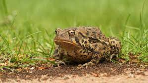

Habitad

El sapo común (Bufo bufo) o sapo europeo es una especie de anfibio anuro de la familia Bufonidae muy habitual en toda clase de hábitats europeos,
Caracteristicas
La cabeza es ancha
- con una boca ancha por debajo del hocico
- tiene dos pequeñas narinas
- en la parte superior. No hay dientes
- Los ojos bulbosos
menú